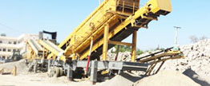

- Home >
- application case >
- granite crushed stone crusher

Construction waste crushing production line
Mobile construction waste crushing station for urban construction waste crushing.
granite crushed stone crusher
Cone type sandblasting machine model in Tanzania, Tanzania granite quarry machines offer
Key words: Cone crusher, sand machine manufacturers, granite quarry machine
Description: Tanzania has many stone, the stone requires a lot of granite quarrying of stone, sand cone Crusher. CAG Zhengzhou mining machinery limited cone of sand, granite quarrying was distinctive of crushing Chamber, broken to form a pyramid principle, broken between the material, so that the cubes in the finished product significantly increased the proportion of finished sand size uniform, level with a good (of sand).
Cone type sandblasting machine, granite quarrying machine is the development trend of modern crushing process
Cone type sand blasting machine, granite quarry is the development trend of modern crushing technology
In the process of social modernization and urbanization, mining machinery manufacturers in the production equipment at the same time also active innovation, research and development of energy-saving and emission reduction of high efficiency crusher equipment, such as mining machinery and equipment jaw crusher, cone type sand machine, granite rock quarry and other large industrial equipment, these devices have achieved high efficiency and energy saving. According to crushing machine principle of work, to achieve high hardness broken, try to reduce the size of feed, effectively improve the crushing efficiency, main way to reduce the cost, compared with other, broken machine energy consumption decreased, operation and maintenance simple. Therefore, the efficient finely cone type sanding machine, granite quarrying machine is the development trend of modern crushing process.
Shanghai CAG mine machine taper type sandblasting machine, granite quarrying machine description
CAG Zhengzhou mining machinery limited cone of sand, granite quarrying was distinctive of crushing Chamber, broken to form a pyramid principle, broken between the material, so that the cubes in the finished product significantly increased the proportion of finished sand size uniform, level with a good (of sand). Key parts of parts used special of wear material composition; row material mouth of machine shell used high strength overall casting, using life long, reliability high; using range wide, through row material mouth of adjustment, can respectively completed stone of broken, and stone of plastic, and business sand, function, a machine more with; using, and maintenance cost low, main wear pieces (rolling mortar wall, and broken wall) continuity work time up 1500-2000h, even more long; while and with production of playing sand machine compared, cone type playing sand machine, and Granite quarry machine lower power consumption, higher efficiency.
Cone type sandblasting machine, granite quarrying machine for large project construction
With history of not only progress, broken machine industry of constantly development grow and competition also increasingly fierce, various broken machine are faced with powerful of competition pressure, faced off Yong who wins, faced powerful of competition pressure, seeks to survival, CAG mine machine not only is committed to new broken technology of development, in broken machine of application get has is big of upgrade, in materials development production work Chiang Kai-shek play with important of role. Especially cone type sandblasting machine, granite quarrying machine research and development, building waste processing, production of dry mortar industry, wide range of applications. Cone type sandblasting machine, granite quarry machine occupies a certain position in the crusher, cone type sandblasting machine, granite quarrying is the biggest feature lies in the integration of equipment configurations, flexible move. With large-scale mining machinery project development and construction, mining projects, such as the rapid advance, cone type sandblasting machine, granite quarrying has been an unprecedented development opportunity.
Leave Me A Message, Now
If you have any questions regarding equipment prices, production line configuration or other problems, you can send a message to us, we will contact you soon.